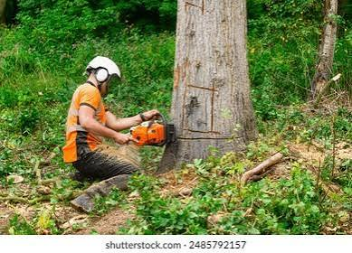
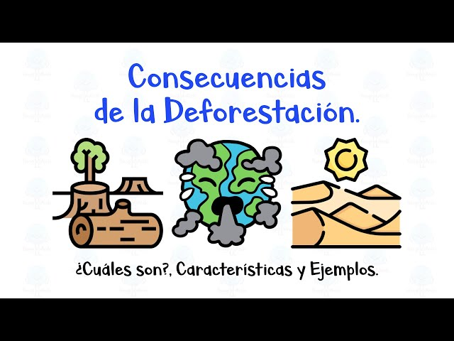
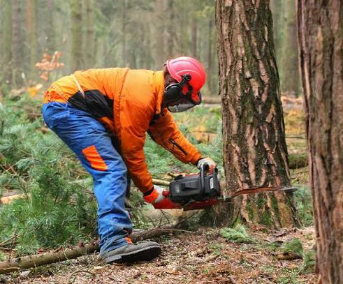

La tala de árboles se define como la acción de cortar y derribar un árbol desde su base, extrayendo los recursos forestales. El gobierno de México establece tres tipos:

Los árboles absorben dióxido de carbono (CO₂), un gas que contribuye al calentamiento global. Cuando los bosques son talados o quemados, dejan de absorber este gas y además liberan el carbono que tenían almacenado. Como resultado, aumenta la cantidad de gases de efecto invernadero en la atmósfera y la temperatura global se eleva.
1. Aumento del calentamiento global
Al haber menos árboles que absorban CO₂, el calor queda atrapado con mayor facilidad en la atmósfera, provocando un incremento de la temperatura del planeta.
2. Alteración del clima
La deforestación puede cambiar los patrones de lluvia y provocar sequías más frecuentes en algunas regiones. Esto afecta tanto a las personas como a los ecosistemas.
3. Menor capacidad para regular la temperatura
Los bosques ayudan a mantener frescas ciertas zonas mediante la sombra y la liberación de vapor de agua. Sin ellos, las temperaturas locales suelen aumentar.

Se ve afectada la agricultura, conforme va aumentando la temperatura, las cosechas reciben menos humedad y en ocasiones, no se obtiene el producto esperado, lo que afecta también a la economía del municipio. Incluso se ve afectada su salud de las personas debido a los golpes de calor.
